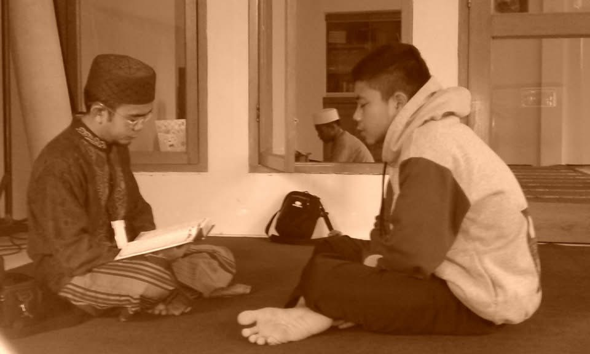
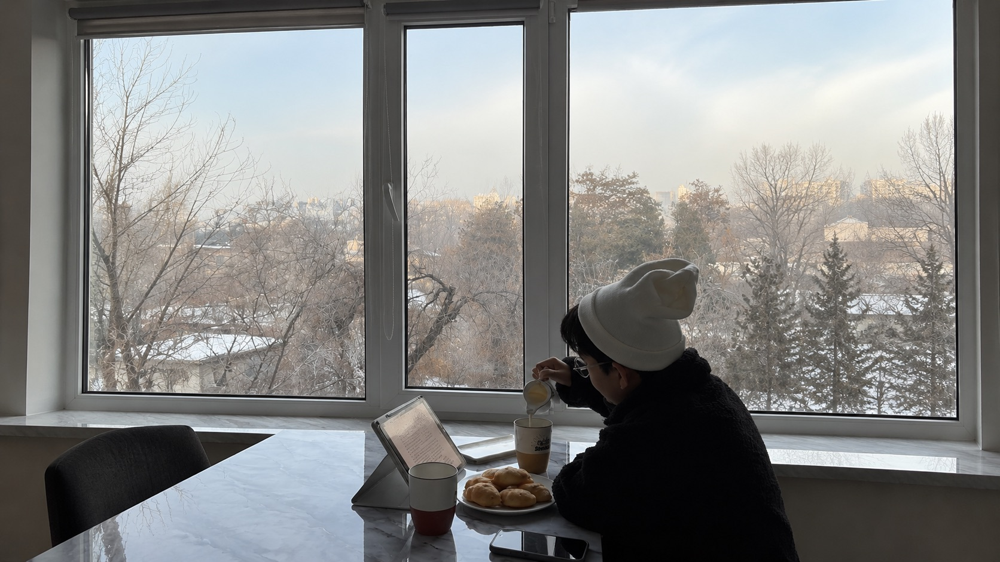
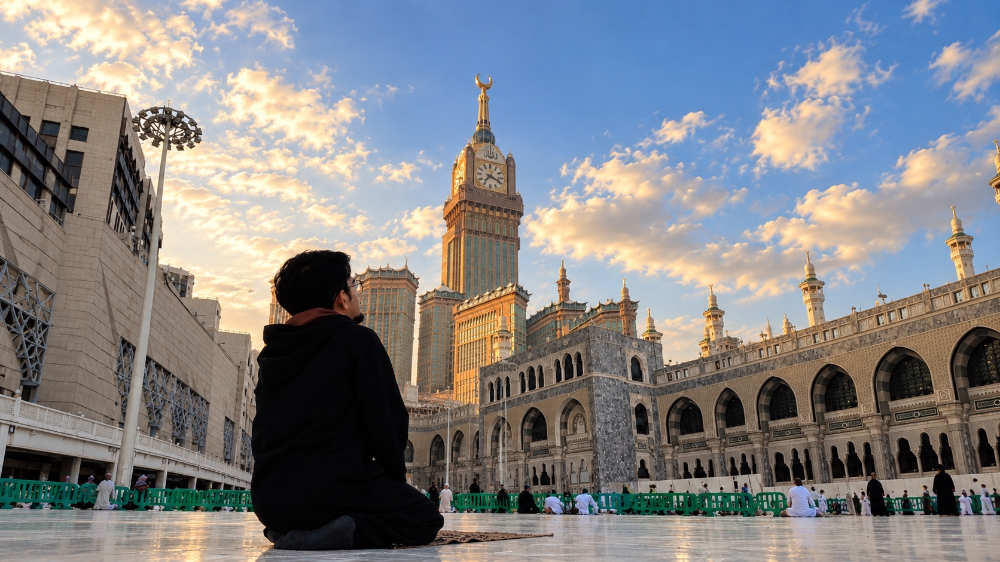
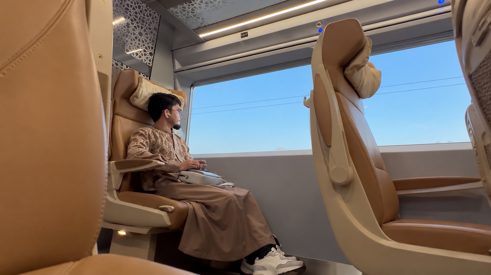
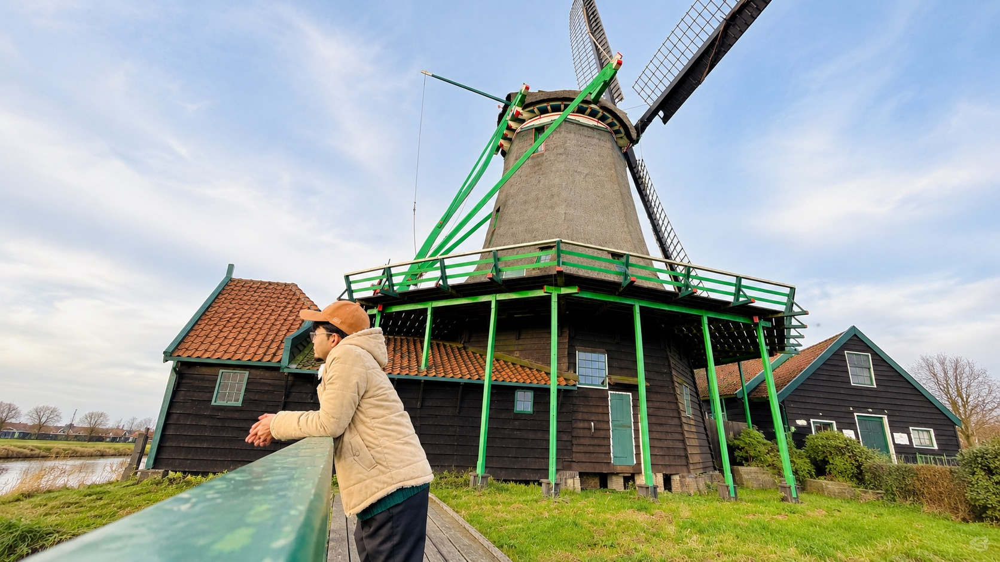
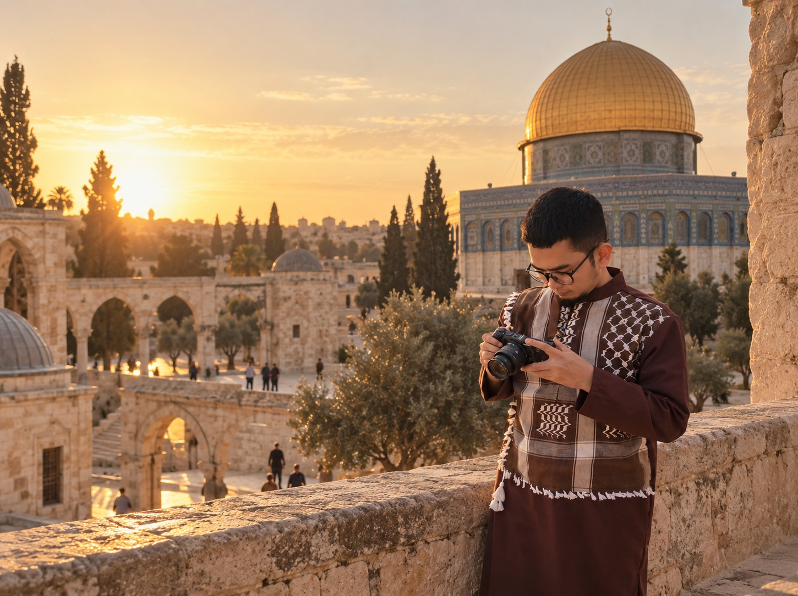

Karya & Catatan Reflektif
Eksplorasi tulisan berdasarkan topik pembahasannya

Faith & Renungan
Catatan spiritual, refleksi hikmah, dan pencarian makna hidup.

Quran & Tadabbur
Tadabbur ayat-ayat Al-Qur'an, hafalan, dan petunjuk hidup.

Work & Portable Life
Membangun karir, bisnis, dan sistem kerja yang fleksibel.

Haramain Journey
Catatan Slow Living dan pengalaman hidup di Makkah & Madinah.

Life Abroad
Pengalaman tinggal, belajar, dan Slow Living lama di berbagai negara.

Life Architecture
Tentang merancang kehidupan- menata iman, work digital, habit dan pilihan hidup.
The Resources
Etalase Karya, Digital Product (E-Book), Live Session.

Portable Income & Work
Untuk kamu yang ingin membangun penghasilan dan pekerjaan fleksibel dari mana saja.
Koleksi panduan remote work, produk digital, monetisasi keahlian, strategi membangun sumber penghasilan yang tidak terikat satu lokasi, serta tools dan template yang mendukung perjalananmu.
Read More →
Portable Life & Slow Living
Untuk kamu yang ingin menjalani slow living dan tinggal lebih lama di berbagai negara.
Koleksi panduan slow living di Haramain dan Eropa, pengalaman hidup lintas negara, tempat tinggal, biaya hidup, serta tips praktis untuk membangun kehidupan yang lebih fleksibel dan bermakna.
Read More →
Faith, Quran & Learning
Untuk kamu yang ingin mendekat kepada Allah melalui karya, pembelajaran, dan kehidupan yang lebih bermakna.
Koleksi program Tahfidz Online Academy, e-book dan materi pembelajaran, karya ATHAR, serta renungan, dan Islamic lifestyle untuk menemani perjalanan kehidupan sehari-hari.
Read More →Who is San Malique?

Assalamu 'alaikum.
I'm San Malique.
Entrepreneur, strategist, and founder — building businesses, products, and communities around faith, the Qur'an, and a more portable way of life.
Lebih dari 10 tahun, saya banyak slow living dan tinggal lama di berbagai negara, menjalani berbagai digital work, belajar dan mengajar Al-Qur'an, menulis buku, dan menjalani berbagai fase kehidupan yang ikut membentuk cara saya melihat dunia.
Saya pernah tinggal lama di Haramain, Eropa, Central Asia, Oman, Jordan, Turki, dan beberapa negara lainnya. Selama perjalanan itu, saya membangun bisnis, membuat produk digital, mengajar Al-Qur'an, menulis buku, dan terus belajar bagaimana membawa iman dan Al-Qur'an ke berbagai negara yang saya tinggali.
Saya ingin menjalani kehidupan yang saya desain sendiri dan Allah izinkan. Alhamdulillah.
Perjalanan itu kemudian melahirkan beberapa karya, brand, dan project yang dari dulu sampai sekarang terus Allah titipkan kepada saya, termasuk Tahfidz Online Academy, Yalla Hajj, Isya Indonesia, ATHAR, sebuah project untuk Muslim creatives, dan San Malique.
Masing-masing lahir dari bagian perjalanan yang berbeda.
Dan perjalanan ini masih terus berkembang.
Ada beberapa hal baru yang sedang saya bangun, termasuk sebuah project tentang portable income — tentang bagaimana membangun sumber penghasilan yang bisa ikut bergerak bersama kehidupan kita, tanpa harus selalu terikat pada satu tempat.
San Malique adalah tempat saya menyimpan catatan dari semuanya:
- Tentang iman.
- Tentang Al-Qur'an.
- Tentang kehidupan.
- Tentang ma'isyah.
- Tentang pekerjaan dan membangun sesuatu.
- Tentang perjalanan.
- Dan tentang bagaimana membangun kehidupan yang bisa terus berjalan, di mana pun kita berada.